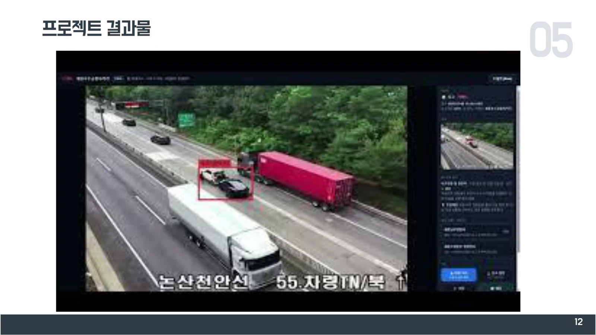
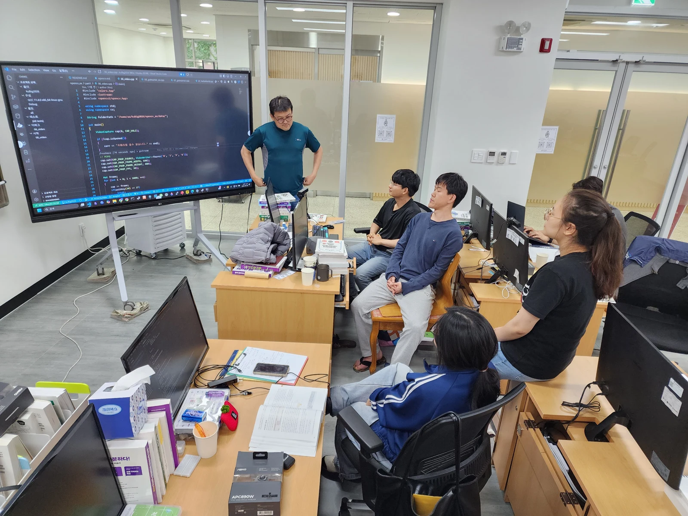
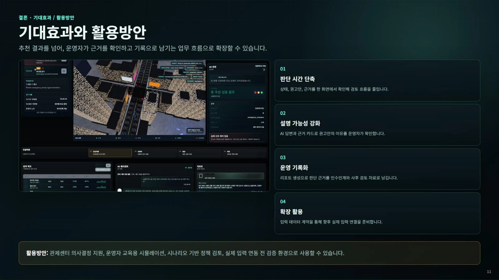
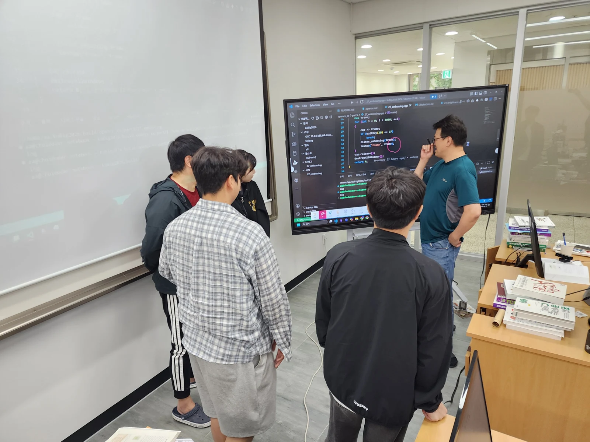

EDUCATION ARCHIVE / KOREA UNIVERSITY SEJONG / 2026
기업의 질문에서 출발한
두 가지 AI 일경험
ABC 프로젝트 멘토링 8기 · 도로 관제와 교차로 의사결정 지원
2026 청년 일경험 지원사업 · 미래내일 일경험
ABC 프로젝트 멘토링 8기
지엔소프트의 「멀티모달 AI 기술 기반 서비스 모델 발굴 연구」 제안에서 출발한 프로젝트형 일경험입니다. 두 팀이 도로 관제와 교차로 의사결정 지원이라는 서로 다른 주제를 구체화했습니다.
- 참여 기업·운영
- 지엔소프트(주) · ㈜유클리드소프트 / ABC부트캠프
- 프로젝트 기간
- 2026.06.04–07.29 · 8주
- 참여 팀
- 신경망기사단 · 워크플로우
각 4명 - 멘토
- 최수길 · 방향·구조 검토, 구현 점검과 결과물 피드백
IoT 수업 참여자들이 수행한 별도의 일경험 프로젝트입니다. 교육 과정의 최종 프로젝트와 구분해 소개합니다.
AI 모델을 붙이는 것만으로 서비스가 완성되지는 않는다. 두 팀은 어떤 영상을 입력받고, 무엇을 판단하며, 그 결과를 누가 어떻게 확인할지 정하는 과정을 거쳤다.
ROAD MONITORING · 일경험 프로젝트
신경망기사단 · 도로 위험을 읽는 CCTV 관제
이상수 · 전제윤 · 김도경 · 홍지나
- 영상 입력
- 객체·이벤트 탐지
- 상황 요약·권고
- 운영자 확인·기록

크게 보기 ↗신경망기사단 최종 발표자료 · 13쪽

크게 보기 ↗신경망기사단 제출 사진 · 2026.06.08
도로 영상을 계속 지켜보는 운영자를 돕기 위해, 객체 탐지 결과와 상황 설명을 함께 제공하는 CCTV 관제 시스템을 개발했다. 공개 교통 영상과 웹캠 입력에서 관심 대상을 찾고, 이벤트 장면을 요약해 대응 판단에 필요한 정보를 모으는 접근이다.
YOLO11의 탐지 결과에 Gemini 기반 영상·언어 모델 분석을 연결했다. 이벤트 이미지에서 상황과 위험 수준, 권고 행동을 정리하고 운영자가 조치 기록과 보고서로 이어갈 수 있도록 구성했다. 발표에는 도로 관제 화면, 동물 탐지 실험과 Pico LCD 경고 장치도 담았다.
이상수는 프로젝트 관리·기획·보고서를, 전제윤은 구조 설계·AI·화면 개발을, 김도경은 데이터와 시험을, 홍지나는 조사·발표·문서를 맡았다. 멘토링에서는 주제를 구현 가능한 기능으로 좁히고 영상 입력부터 탐지·표시까지 연결하는 과정을 점검했다.
남긴 결과
관제 화면, 이벤트 분석 흐름과 경고 표시 실험을 발표자료로 정리했다. 운영자가 탐지 결과를 검토하는 보조 시스템이다.
후속 과제
야간·우천·저화질 영상 대응, 포트홀·낙하물 등 도로 특화 데이터 학습과 영상 단위 분석은 추가 과제로 남았다. 실도로 운영 성능을 검증한 상용 시스템은 아니다.
TRAFFIC DECISION SUPPORT · 시뮬레이션 기반
워크플로우 · 교차로의 다음 판단을 돕는 화면
정귀인 · 황지용 · 박찬웅 · 박시영
- 교차로 시나리오
- 우선순위·정책 판단
- 3D 화면·근거 표시
- 시뮬레이션 비교

크게 보기 ↗워크플로우 최종 발표자료 · 11쪽, 시뮬레이션 화면

크게 보기 ↗워크플로우 제출 사진 · 2026.06.10
교차로에서 어떤 상황에 먼저 대응해야 하는지 운영자가 검토할 수 있도록 의사결정 지원 대시보드를 만들었다. 평상시·긴급차량·보행자·도로 막힘 시나리오를 나누고, 각 상황의 정책 우선순위와 권고 근거를 화면에 함께 보여주었다.
Next.js·React와 Three.js 기반 3D 화면, FastAPI 백엔드, SUMO·TraCI 시뮬레이션을 연결했다. 고정 신호 방식과 권고 정책의 시뮬레이션 결과를 비교하고, AI 질의와 보고 기능으로 판단 근거를 살펴보도록 했다.
정귀인은 프로젝트 관리·백엔드·AI 연동을, 황지용은 데이터·백엔드를, 박찬웅은 화면·3D 표현·정책 규칙을, 박시영은 문서·데이터·YOLO 관련 작업을 맡았다. 멘토링에서는 입력 조건과 권고 근거를 분명하게 설명하고, 화면·시험·최종 문서를 일치시키는 데 초점을 두었다.
만든 결과
교차로 상태·정책 권고·비교 결과를 함께 살펴보는 시뮬레이션 대시보드와 최종 보고서를 남겼다.
적용 범위
실제 교통 신호를 제어하지 않는 운영자 검토용 시스템이다. 실 CCTV·신호 시스템의 현장 연동과 실제 교통 개선 효과 검증은 포함하지 않는다.